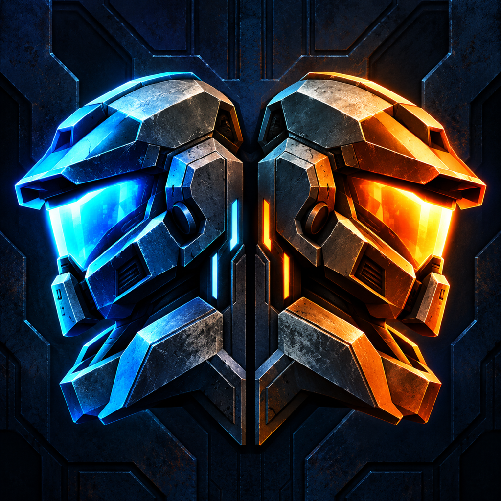

Two players. One screen.
A retro sci-fi first-person shooter for local two-player play. Team up in co-op or face off in deathmatch, with independent touch controls and side-by-side views on one device.
Includes 36 Freedoom Phase 1 campaign maps, 32 Phase 2 campaign maps, and 32 FreeDM arenas. Choose a starting map and enemy-population difficulty. No second device or online matchmaking required.
Designed for landscape play; larger screens give both players more room. Background music is not included in the initial release.
App Store release is pending review.
Controls and support · Privacy policy
Freedoom content is included under its BSD 3-Clause license. Commercial DOOM game data is not included. DUOM is not affiliated with or endorsed by id Software.